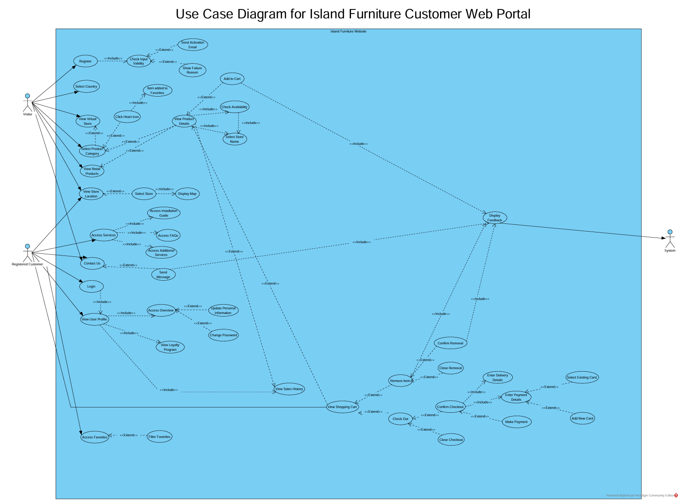
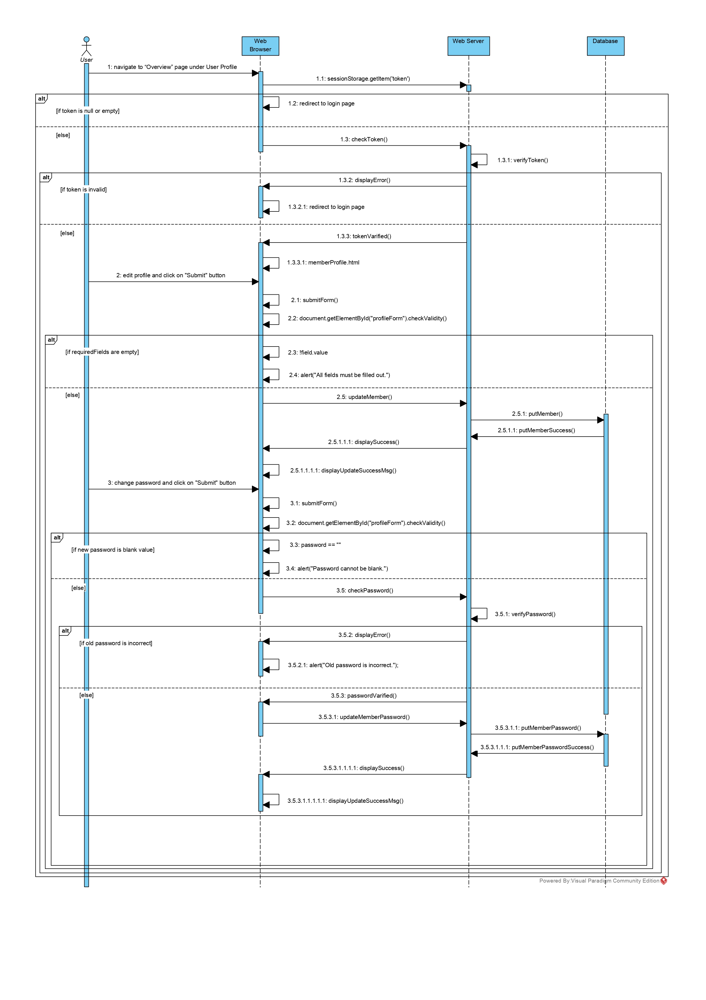

IslandFurniture Web Portal
This project involved enhancing an existing e-commerce web portal for IslandFurniture by applying end-to-end software engineering practices, from requirement gathering to system design, testing, bug fixing, and delivery.
Working as part of a SCRUM team, I contributed to both feature development and system maintenance, ensuring the platform was user-friendly, reliable, and aligned with stakeholder expectations. The project closely mirrored how real software teams manage change requests, collaborate under agile frameworks, and deliver improvements incrementally.

🔍 Requirements Gathering & Analysis
The project began with stakeholder engagement to understand requested improvements to the customer web portal. These requirements focused on:
- Improving navigation clarity
- Enhancing customer personalisation
- Providing accessible service information
- Fixing functional issues reported by users
Through structured discussions and analysis, requirements were refined and translated into clear functional goals, ensuring alignment between business needs and technical implementation.
📋 Agile Development with SCRUM
The project was managed using SCRUM methodology, allowing the team to work iteratively and adapt to changes efficiently. Key agile practices included:
- Sprint planning and task prioritisation
- Daily scrum meetings with documented minutes
- Product backlog management using user stories
- Effort estimation using man-hour calculations
- Progress tracking via Scrum boards and burndown charts
These practices ensured transparency, accountability, and steady progress throughout the project lifecycle.
⭐ Key Features Implemented
Favorites Feature (Personalisation)
To improve customer experience, a Favorites feature was designed and implemented:
- Users can mark products as favorites using a heart icon
- Visual feedback indicates favorited items
- Favorites persist across login sessions
- Access is restricted to authenticated users
- Favorites can be filtered by product categories
This feature enhances usability by allowing customers to easily revisit products of interest.
Services Feature (Accessibility & Support)
A Services section was introduced to provide customers and visitors with helpful resources:
- Services are accessible to both logged-in users and public visitors
- Displayed alongside store locations for convenience
- Each service provides detailed information on click
- Includes installation guides, FAQs, and additional assistance options
This ensured that essential support information was easily accessible to all users.
🧩 System Design & Documentation
To clearly model system behaviour and interactions, I contributed to:
- Use case diagrams covering the entire web portal
- Use case specifications detailing expected flows, alternate flows, and error handling
- User story cards with confirmation criteria, ensuring requirements were testable and unambiguous
These artefacts helped bridge communication between stakeholders and developers while supporting structured implementation.
Use Case Diagram
The use case diagram below illustrates the complete system functionality for the Island Furniture Customer Web Portal:

🧪 Testing, Bug Fixing & Maintenance
Beyond feature development, the project also focused on system reliability and quality assurance:
- Designed and executed test cases for key user functions
- Identified and fixed issues related to login, profile management, password validation, and sales history
- Documented system behaviour using sequence diagrams to illustrate frontend–backend–database interactions
- Followed a structured change-request process for code updates and version control
This ensured that enhancements did not break existing functionality and met user expectations.
Sequence Diagram: Edit Profile and Change Password
The sequence diagram below demonstrates the interaction flow between the web browser, web server, and database for the edit profile and change password functionality:

💡 Key Technical & Professional Skills Demonstrated
- Agile & SCRUM Practices
- Requirements Elicitation & Analysis
- User Story Writing & Backlog Management
- Use Case & Sequence Diagram Modelling
- Effort Estimation & Sprint Planning
- Testing & Bug Fixing
- Change-Request & Version Control Workflow
- Team Collaboration & Communication
- System Thinking & Problem Decomposition
🎯 What This Project Shows About Me
This project demonstrates my ability to:
- Work effectively in a team-based agile environment
- Translate business needs into structured technical solutions
- Balance documentation, planning, testing, and implementation
- Think critically about user experience and system reliability
- Apply software engineering principles in a realistic, production-like setting
It reflects my strong foundation in software engineering processes, complementing my technical development and data-driven projects.